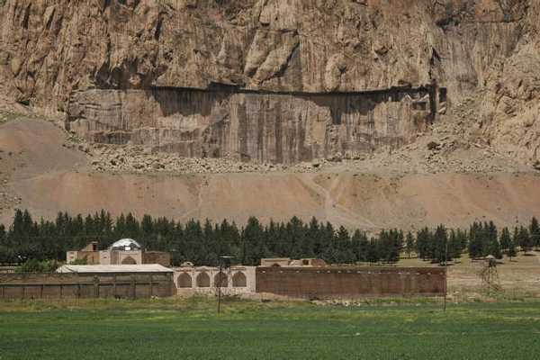
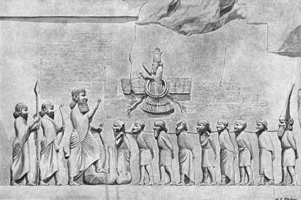
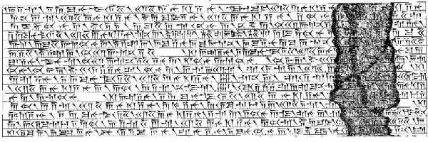

Behistun
アケメネス朝ペルシャ帝国のダリュウス王が自らの即位の経緯と正当性を主張するためレリーフと碑文を刻んだ

Relief

Detail
ベヒストゥン碑文は楔型文字の解読に貢献した碑文として有名でアラム語古代ペルシャ語アッカド語新バビロニア語と異なった言語と書体を含んで書かれたものが発見された 当初はアラム語で書かれレリーフを刻んだ時代に古代ペルシャ語とアッカド語新バビロニア語を追加したものと考えられている